Меню ресторану Salateira:
Салати
Цезар (листя салату, томати, куряча грудка, яйце, пармезан, сухарики. Соус часниково-горіховий (горіх грецький, часник запечений, вершки, майонез). Вага: 430г)

Греко (листя салату, томати, болгарський перець свіжий, огірки, фета в травах, оливки, олія оливкова. Вага 420 г)

Сімпл (кіноа, тофу, морква карамелізована, боби Едамаме, шпинат. Соус азійський (арахіс, кунжут, часник, соєвий соус, винний оцет, олія, майонез, цукор, сіль). Вага 410г)

Дімента Deluxe (листя салату, огірки, моцарела, м'ясо в'ялене пармське, оливки, рукола. Соус огірково-вершковий (огірок маринований, кріп, часник запечений, вершки, соєвий соус...)
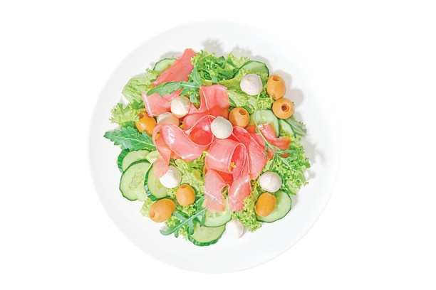
Діжон Deluxe (листя салату, томати, куряча грудка, мікс грибів, яйце, бекон, шпинат. Соус Діжон (гірчиця французька, мед, винний оцет, оливкова олія, соєвий соус, часник, цибуля, сіль). Вага: 470...)
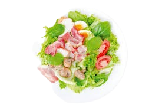
Цезар Deluxe (листя салату, томати, куряча грудка, яйце, ананас, бекон, пармезан, сухарики. Соус часниково-горіховий (горіх грецький, часник запечений, вершки, майонез). Вага: 520г...)

Маріно (листя салату, овочі запечені, фета в травах, тунець, рукола, авокадо. Соус огірково-вершковий (огірок маринований, кріп, часник запечений, вершки, соєвий соус, майонез...)

Очеано (листя салату, томати, огірки, лосось, крем сир, яйце. Соус лимонно-медовий (оливкова олія, лимонний сік, мед, сіль). Вага 440 г...)

Брізе (листя салату, болгарський перець свіжий, огірки, тунець, креветки, рукола, соус з ікрою летючої риби Вага: 380 г (310 салат/70 соус)...)

Сендвічі
Сендвіч Парма (хліб на заквасці, м’ясо в’ялене пармське, листя салату, томати, крем-фета, базилік, соус часниково-горіховийю)
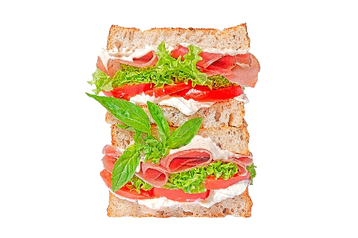
Сендвіч Трітоне (хліб на заквасці, лосось, листя салату, огірок, рукола, крем-фета, соус огірково-вершковий.)
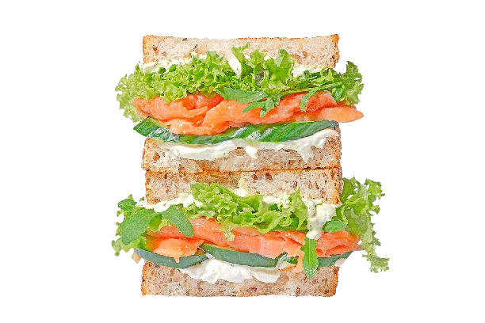
Сендвіч Капрезе (хліб на заквасці, листя салату, томати, моцарела, рукола, соус песто.)
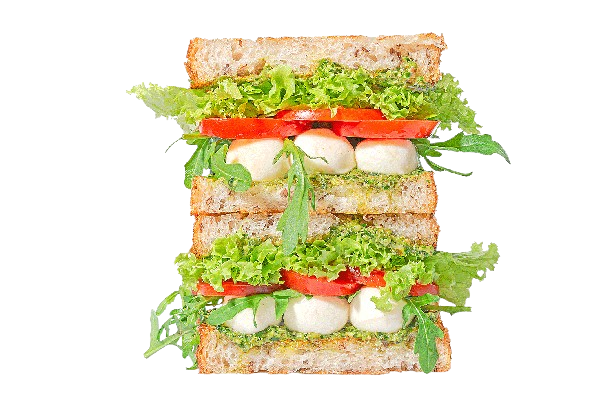
Сендвіч Чікен Бекон (хліб на заквасці, куряче філе запечене, бекон, листя салату, огірок, соус часниково-горіховий)
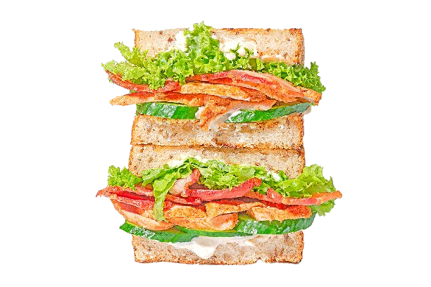
Сендвіч Туна (хліб на заквасці, тунець, листя салату, огірок, крем-фета, соус огірково-вершковий.)
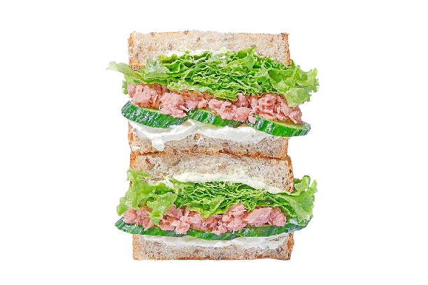
Сендвіч Поло (хліб на заквасці, куряче філе запечене, листя салату, болгарський перець гриль, крем-фета, соус часниково-горіховий)
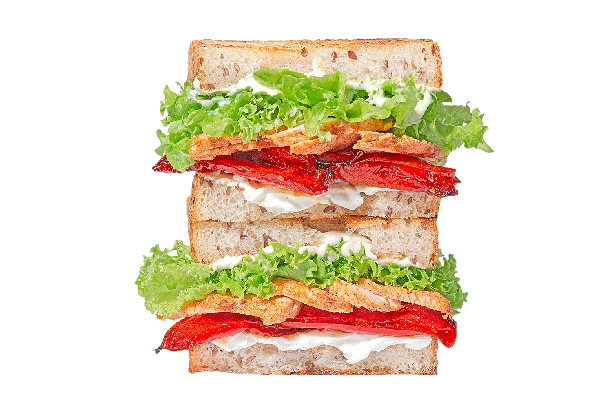
Донери
Донер з індичкою (лаваш, індичка, маринований огірок, мікс салату та кіноа, гриби ерінги, томати, петрушка, соус часниковий)
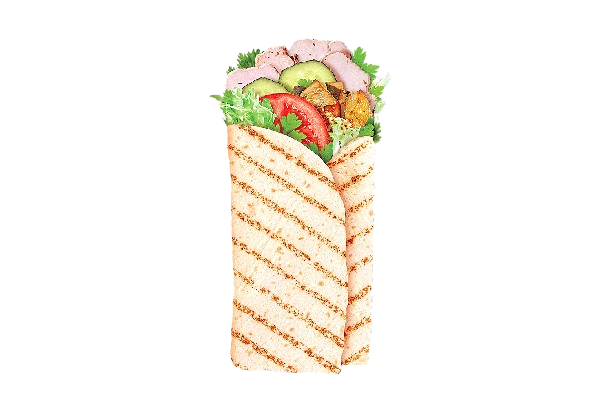
Донер Туна (лаваш, мікс айсберг з кіноа, фета в травах, тунець, огірок, яйце, соус огірково-вершковий, соус часниковий)

Донер Фіш (лаваш, мікс айсберг з кіноа, лосось, огірок, перець болгарський запечений, соус часниковий)

Донер Чікен (лаваш, мікс айсберг з кіноа, куряче філе запечене, пармезан, авокадо, морква карамелізована, соус часниковий)

Organic Кава
Американо з молоком Organic

Подвійне еспресо Organic
Еспресо Organic
Флет Вайт Organic
Американо Organic
Капучино Organic XL
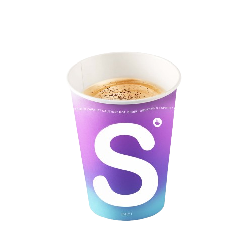
Капучино Organic
Лате Organic XL
.png)
Лате Organic
Пасти
Карбонара (лінгвіне, мікс грибів, бекон, пармезан, базилік. Соус вершково-грибний (вершки, масло, крем-сир, гриби білі, сіль, перець, цукор). Вага 400 г (300/100 соус))

Фреско (паста, кабачок запечений, запечена цвітна капуста, фета в травах, тунець, шпинат, соус діжон. Вага 500 г (450/50 соус))

Густо паста, томати, м'ясо в'ялене пармське, бергадер, оливки, базилік, соус огірково-вершковий. Вага 460 г (390/70 соус)
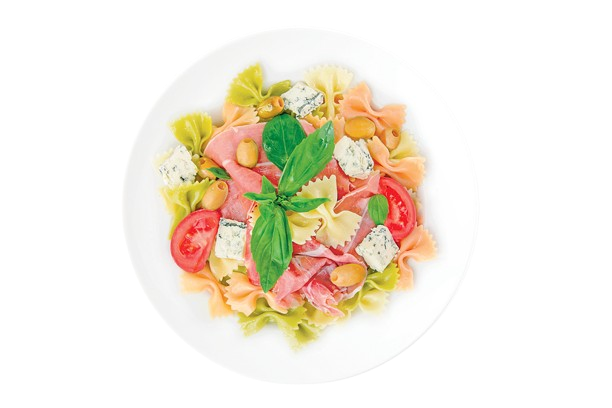
Песто Deluxe (паста, томати, куряча грудка, фета в травах, боби Едамаме, шпинат, соус песто. Вага 530 г (480/50 соус))

Камаро (паста, болгарський перець свіжий, огірки, тунець, креветки, рукола, соус з ікрою летючої риби. Вага 500 г (420/70 соус)

Карбонара Deluxe (лінгвіне, томати, куряча грудка, мікс грибів, бекон, пармезан, базилік, соус вершково-грибний. Вага 580 г (480/100 соус))

Крусани
Круасан Чікен-бекон (круасан, курка запечена, бекон, огірок, листя салату, соус часниково-горіховий)

Круасан Капрезе (круасан, моцарела,томати,листя салату,базилік, соус песто)

Круасан Поло (круасан, куряча грудка, болгарський перець запечений, крем-фета, листя салату, соус часниково-горіховий)

Круасан Туна (круасан, тунець, крем-фета, огірок, листя салату, соус огірково-вершковий)

Круасан Парма (круасан, томати, м'ясо в'ялене пармське, крем-фета, листя салату, базилік, соус часниково-горіховий)
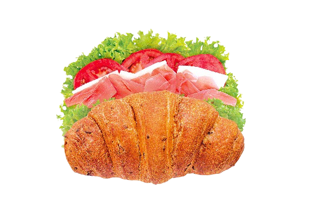
Круасан Трітоне (круасан, лосось, огірок, крем-фета, листя салату, рукола, соус огірково-вершковий)
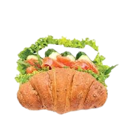
Хумус
Хумус-Чікен (нут, морква карамелізована, тахінна паста, лимонний фреш, цукор, сіль, часник, зіра, курка запечена, огірок, мікс грибів, рукола)

Хумус Оріджинал (нут, морква карамелізована, тахінна паста, лимонний фреш, цукор, сіль, часник, зіра)
картинку я не знайшла
(щоб перейти на головну сторінку,треба натиснути на силку)